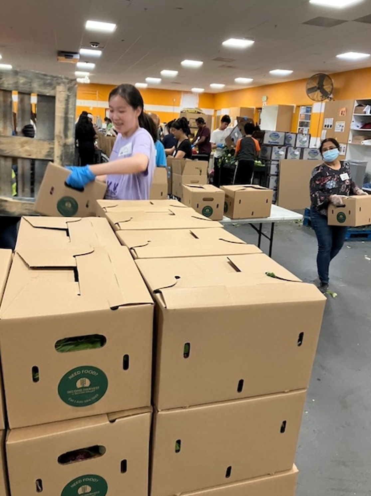

BISV Lower School Volunteering
In 2024, I took part in a volunteering program at the elementary school section of my school. This is where I truly discovered my love for teaching and interacting with kids, helping them build their very own city using paper, playdough, and all sorts of materials as a fun project week. Ultimately, this experience is what pushed me to pursue different opportunities in the following year, whether it be developing my very own writing workshop at my local library or continuing to work with the FCSN children.


Medical Translator App
The main goal of my medical translator project is to improve accessibility in healthcare and communication between doctor and patient, especially in situations where misunderstandings could cause harm to patients. By using this app to make medicine, whether it be terms, doses, or even what certain pills are, more understandable to patients, allowing for a clear understanding of their treatment plans. By helping develop this app, my interest in using technology and my knowledge to solve real-world struggles are utilized, making more services inclusive and accessible.
Volunteer Work
In the past, I have volunteered at a variety of places, including food banks and animal farms. However, I have been consistently volunteering at Friends of Children with Special Needs for three years, and it has proven to be the most rewarding experience of all. During the summer of 2024, I was invited to volunteer at a basketball summer camp. This experience inspired me to lead my own class in a music camp during the same summer. Wanting to share my love for dance, I began teaching my own choreography to pop songs that the children would enjoy. The following school year, I was invited to lead a dance class at an after-school program that would run throughout the year. Therefore, I kept working with FCSN, teaching dance and adjusting my teaching to benefit the students.


